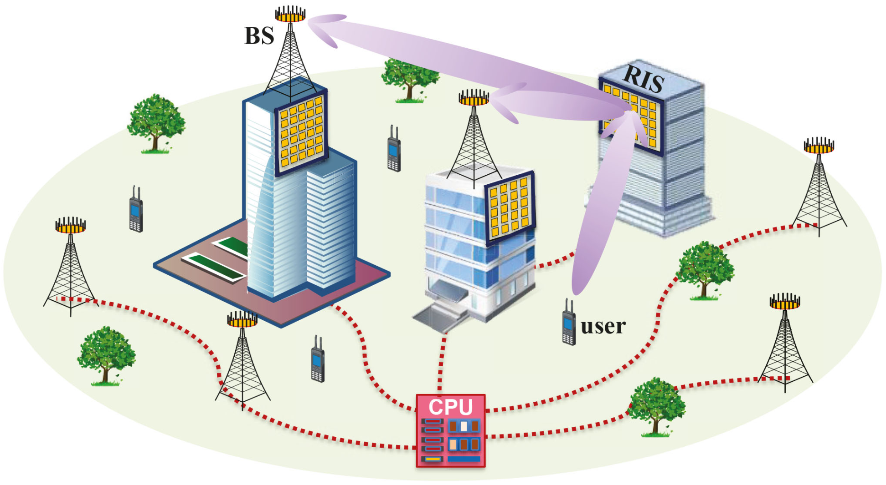
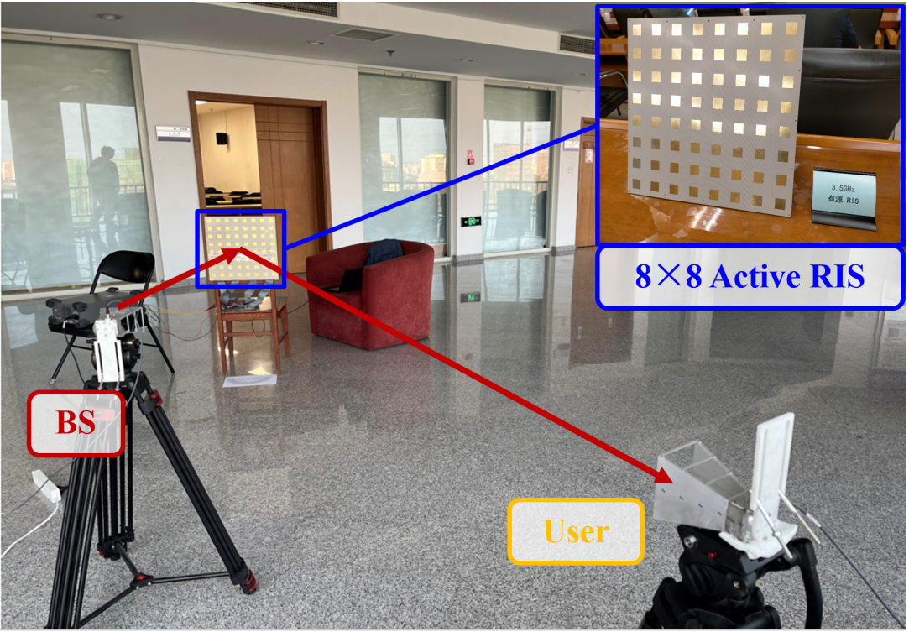
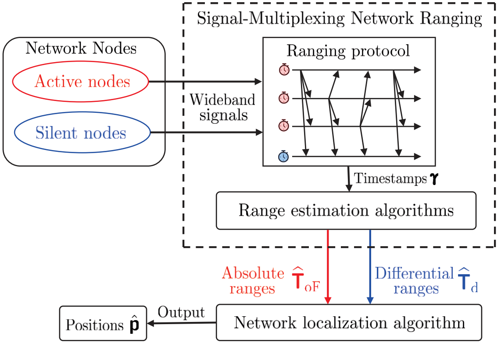
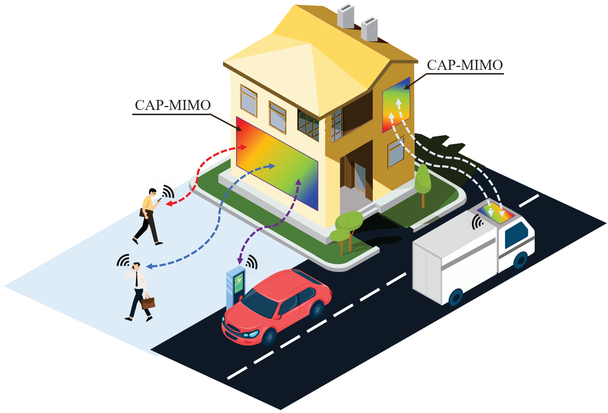

|
Projects
Reconfigurable intelligent surface-aided cell-free network
|
 |
We propose the concept of RIS-aided cell-free network to improve the capacity with low cost and power consumption. The key idea is to replace some of the required BSs by low-cost
and energy-efficient RISs. Most of the scenarios considered in existing works are special cases of the general scenario studied in this paper, and the proposed joint precoding framework can serve as a general solution to maximize the capacity in most existing RIS-aided scenarios.
Z. Zhang and L. Dai, “A joint precoding framework for wideband reconfigurable intelligent surface aided cell-free network,” IEEE Transactions on Signal Processing, vol. 69, pp. 4085-4101, Aug. 2021. [Paper] [Codes]
Z. Zhang and L. Dai, “Capacity improvement in wideband reconfigurable intelligent surface-aided cell-free network,” in Proc. 2020 IEEE 21st International Workshop on Signal Processing Advances in Wireless Communications (IEEE SPAWC’20), Atlanta, USA, May 2020. [Paper] [Codes]
K. Liu and Z. Zhang, “On the energy-efficiency fairness of reconfigurable intelligent surface-aided cell-free network,” in Proc. 2021 IEEE 93rd Vehicular Technology Conference (IEEE VTC’21 Spring), Helsinki, Finland, Apr. 2021. [Paper]
|
Active reconfigurable intelligent surface
|
 |
Due to the “multiplicative fading” effect, the existing passive RISs only achieve a negligible capacity gain in environments with strong direct links. We propose the concept of active RISs to overcome this fundamental limitation. We verify the signal model of active RISs through the experimental measurements on a fabricated active RIS element. Based on the verified signal model, we formulate
the sum-rate maximization problem for an active RIS aided MU-MISO system and a joint transmit precoding and reflect beamforming algorithm is proposed to solve this problem. Finally, we develop a 64-element active RIS aided wireless communication prototype, and the significant gain of active RISs is validated by field test.
Z. Zhang, L. Dai, X. Chen, C. Liu, F. Yang, R. Schober, and H. V. Poor, “Active RIS vs. passive RIS: Which will prevail in 6G?,” IEEE Transactions on Communications, Dec. 2022. [Paper] [Codes]
K. Liu, Z. Zhang, L. Dai, S. Xu, and F. Yang, “Active reconfigurable intelligent surface: Fully-connected or sub-connected?,” IEEE Communication Letters, vol. 26, no. 1, pp. 167-171, Jan. 2022. [Paper] [Codes]
Z. Zhang, L. Dai, X. Chen, C. Liu, F. Yang, R. Schober, and H. V. Poor, “Active RISs: Signal modeling, asymptotic analysis, and beamforming design,” in Proc. 2022 IEEE Global Communications Conference (IEEE GLOBECOM’22), Rio de Janeiro, Brazil, Dec. 2022. [Paper] [Codes]
|
Signal-multiplexing network measuring
|
 |
Precise range information is essential for high-precision network localization, where clock drifts will
severely degrade the ranging accuracy. Two-way ranging methods are commonly adopted to mitigate those effects in localization networks but requiring a large amount of signal transmission to measure the distance between all pairs of nodes. We design a signal-multiplexing network measuring scheme, which can measure all node-pair distances with a minimum number of signal transmissions. In this way, the signal overhead is reduced from O(N^2) to N+1 for a N-node network.
Z. Zhang, H. Zhao, J. Wang and Y. Shen, “Signal-multiplexing ranging for network localization,” IEEE Transactions on Wireless Communications, vol. 21, no. 3, pp. 1694-1709, Mar. 2022. [Paper] [Codes]
H. Zhao, Z. Zhang, J. Wang, Z. Zhang and Y. Shen, “A signal-multiplexing ranging scheme for integrated localization and sensing,” IEEE Wireless Communications Letters, vol. 11, no. 8, pp. 1609-1613, Aug. 2022. [Paper] [Codes]
Z. Zhang, H. Zhao, and Y. Shen, “High-Efficient ranging algorithms for wireless sensor network,” in Proc. 2019 11th International Conference on Wireless Communications and Signal Processing (WCSP’19), Xi'an, P.R. China, Oct. 2019. [Paper]
|
Pattern-division multiplexing for continuous-aperture MIMO
|
 |
In recent years, thanks to the advances in metamaterials, the concept of continuous-aperture MIMO (CAP-MIMO) is reinvestigated to achieve improved communication performance with limited antenna apertures. The pattern design is the key factor to determine the communication performance of CAP-MIMO, but it has not been well studied in the literature. In this paper, we develop pattern-division
multiplexing (PDM) to design the patterns for CAP-MIMO. Specifically, we first study and model a typical multi-user CAP-MIMO system, which allows us to formulate the sum-rate maximization problem. Then, we develop a general PDM technique to transform the design of the continuous pattern functions to the design of their projection lengths on finite orthogonal bases, which can overcome the challenge of functional programming.
Z. Zhang and L. Dai, “Pattern-division multiplexing for multi-user continuous-aperture MIMO,” arXiv preprint arXiv: 2111.08630, Nov. 2021.
Z. Zhang and L. Dai, “Pattern-division multiplexing for continuous-aperture MIMO,” in Proc. 2022 IEEE International Conference on Communications (IEEE ICC’22), Gangnam-gu, Seoul, South Korea, May 2022. [Paper] [Codes]
|
|